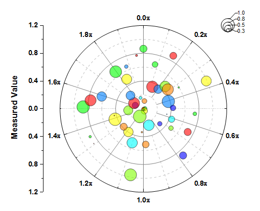
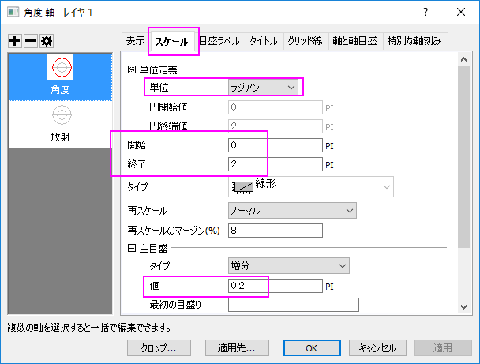
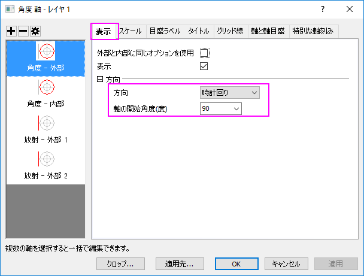
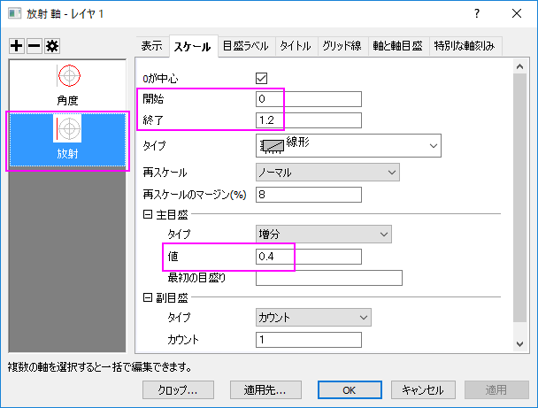
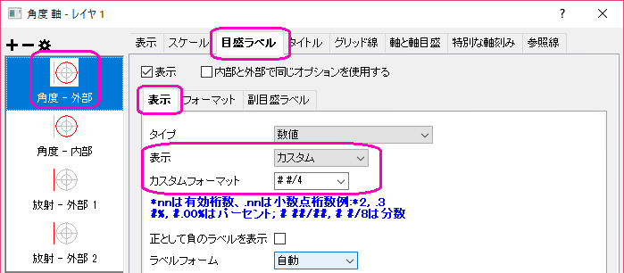
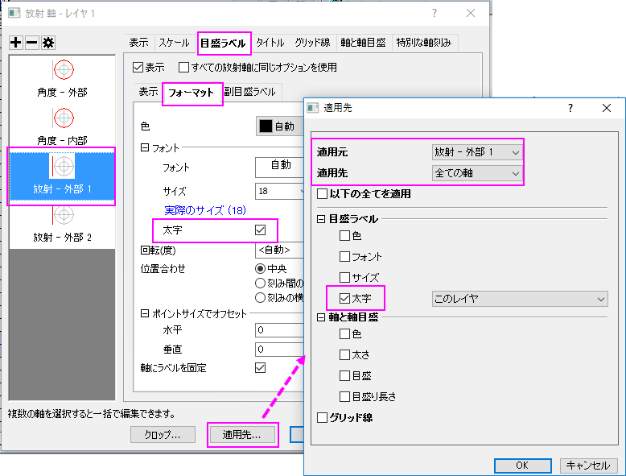
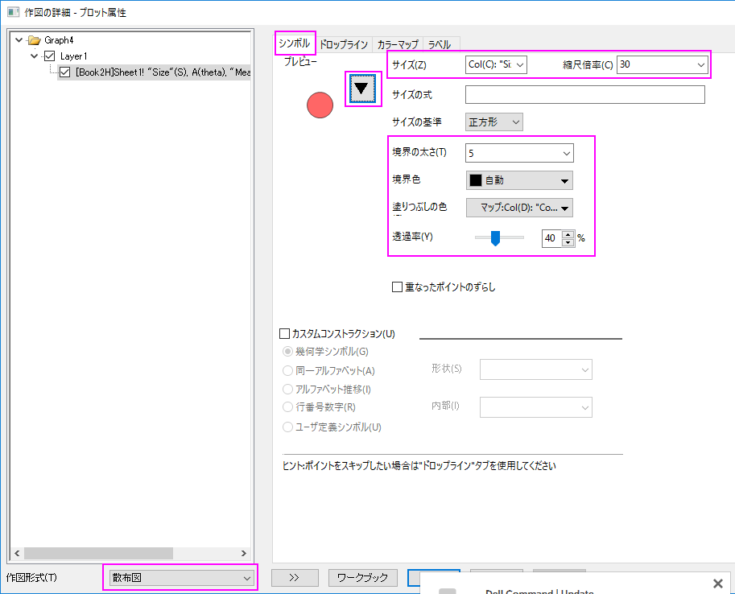
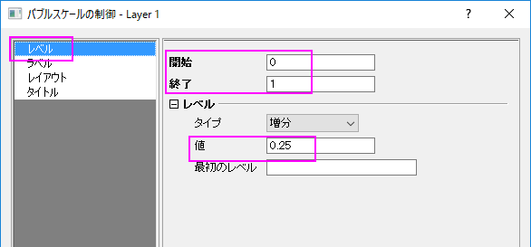
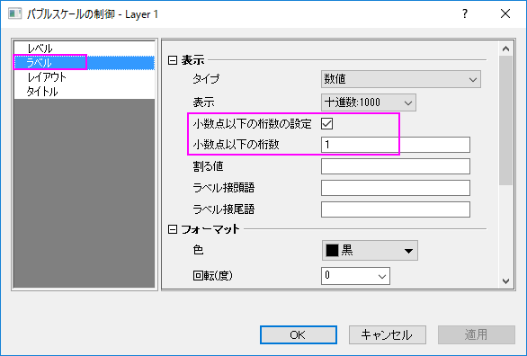
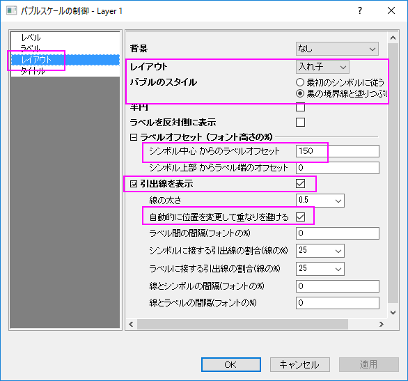

極座標グラフの方位軸編集
polar-custom-angular
サマリー
通常、極座標グラフの方位軸単位は、度、ラジアン、グラジアンを使用します。しかし、Originの極座標グラフはカスタム単位の使用をサポートしています。

必要なOriginのバージョン: Origin 2018b以降
学習する項目
このチュートリアルでは、以下の項目について説明します。
- データセットを使用して極座標グラフのシンボルと色を制御する
- 方位軸にカスタム単位を使用する
- 目盛ラベルを四半期で表示するには：
- バブルスケールの追加とカスタマイズ
ステップ
Origin Centralにある「このグラフ」を参照してください。(ヘルプ: ラーニングセンター メニューを選択、または
キーボードのF11 キーを押して、グラフサンプル：極座標グラフを選択します)
- 列Bを選択して、作図：特殊グラフ：θr極座標グラフを選択して極座標グラフを作成します。
- 軸をダブルクリックして、軸ダイアログを開きます。スケールタブに移動し、左パネルで角度を選択します。右のパネルで単位定義のノードを開き、単位にラジアンを選択します。スケールが0から2Piになっていることを確認します。増分の値を0.25に変更します。

- 表示のタブの角度-外部軸を開き、方向を時計回りに変更して軸の回転角度（度）
を90に設定します。

- スケールタブに移動し、左パネルで放射を選択します。スケールを0から1.2に設定し、増分の値を0.4に変更します。

- 目盛ラベルタブの角度- 外部1軸を開きます。表示のサブタブで、表示からカスタムを選び、フォーマットのカスタムに
# #/4と入力します。

- 外部1軸を選びます。フォーマットサブページを選択して、太字のチェックボックスにチェックを入れます。そして、適用先...ボタンをクリックします。ポップアップダイアログ
で、適用元が外部1に、 適用先が全ての軸となっていることを確認してから、目盛ラベルの下にある太字のチェックボックスにチェックを入れます。OKをクリックします。

軸ダイアログで、OKをクリックしてこの設定を適用して、軸ダイアログを閉じます。
- 折れ線上でダブルクリックして作図の詳細ダイアログを開き、左パネル下部にある作図形式ドロップダウンリストで、散布図を選択します。シンボルのタブで、以下の手順で設定を行います。

OKをクリックして設定を適用して、作図の詳細ダイアログを閉じます。
- メインメニューの挿入から新規バブルスケールを選択して、このグラフにバブルスケールを追加します。
- バブルスケールを右クリックして、プロパティを選択し、ダイアログを開きます。レベルページで、ラベルを0から1に設定して、値を0.25に変更します。

- ラベルページで、小数点以下の桁数の設定のチェックボックスにチェックを入れてから、小数点以下の桁数のテキストボックスに1を入力します。

- レイアウトページで、レイアウトのドロップダウンリストから入れ子を選択します。バブルのスタイルを黒の境界線と塗りつぶしなしに設定して、
シンボル中心からのラベルオフセットを150にします。引出線を表示のチェックボックスにチェックを入れてメニューを開き、自動的に位置を変更して重なりを避けるチェックボックスにチェックを入れます。OKをクリックしてこの設定を適用して、ダイアログを閉じます。

最後に、凡例を手動で移動して、アンチエイリアシングを適用する・しないボタン をクリックしてグラフをスムージングします。最終的なグラフは次のようになります。
をクリックしてグラフをスムージングします。最終的なグラフは次のようになります。